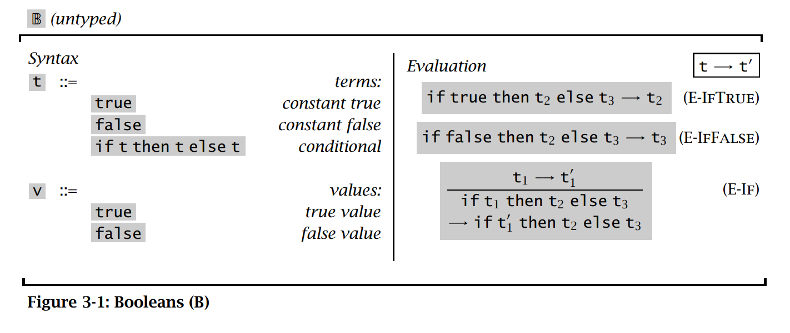
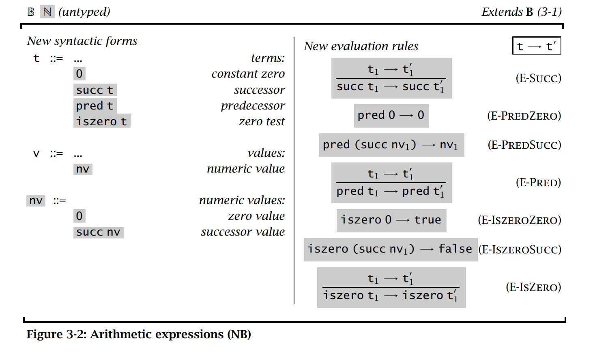
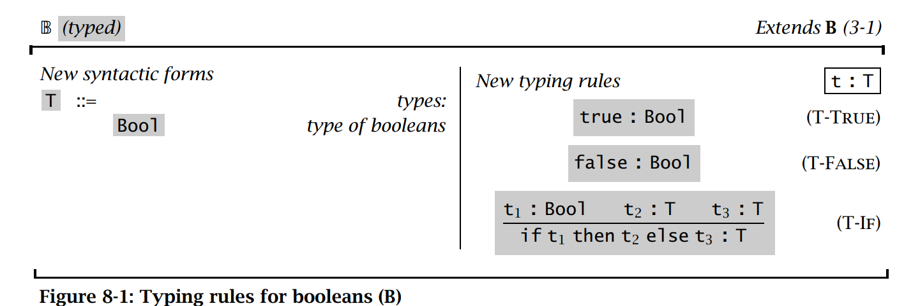
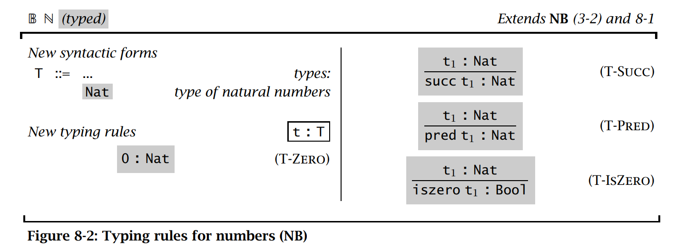
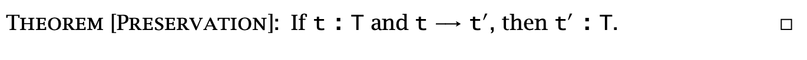
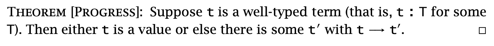

A simple formal proof for Typed Arithmetic Expressions in TAPL
I read Types and Programming Languages (TAPL) these days and was deeply impressed by the beauty of programming language. To practice proofs related to programming language theory and use of the Coq language, I formalize the following syntax and semantics in Coq and prove Progress and Preservation theory.






And here is the Coq code.
Inductive type : Type :=
| B (*boolean*)
| N (*nat*)
.
Inductive term : Type :=
| boolean (b : bool)
| if_then_else (t1 t2 t3 : term) (* if t1 then t2 else t3 *)
| zero
| succ (t: term)
| iszero (t : term)
| pred (t : term).
(* number value *)
Inductive nvalue : term -> Prop :=
| NZero : nvalue zero
| NSucc : forall (t:term), nvalue t -> nvalue (succ t).
Inductive value : term -> Prop :=
| BValue : forall (t : term) (b : bool), t = boolean b -> value t
| NValue : forall (t : term), nvalue t -> value t.
Inductive evaluate : term -> term -> Prop :=
| E_SUCC :
forall (t1 t2 : term),
evaluate t1 t2 ->
evaluate (succ t1) (succ t2)
| E_PREDZERO :
evaluate (pred zero) zero
| E_PREDSUCC :
forall (t : term),
nvalue t ->
evaluate (pred (succ t)) t
| E_PRED :
forall (t1 t2 : term),
evaluate t1 t2 ->
evaluate (pred t1) (pred t2)
| E_ISZEROZERO :
evaluate (iszero zero) (boolean true)
| E_ISZEROSUCC :
forall (t : term),
nvalue t ->
evaluate (iszero (succ t)) (boolean false)
| E_ISZERO :
forall (t1 t2 : term),
evaluate t1 t2 ->
evaluate (iszero t1) (iszero t2)
| E_IFTRUE :
forall (t2 t3 : term),
evaluate (if_then_else (boolean true) t2 t3) t2
| E_IFFALSE :
forall (t2 t3 : term),
evaluate (if_then_else (boolean false) t2 t3) t3
| E_IF :
forall (t1 t2 t3 t1' : term),
evaluate t1 t1' ->
evaluate (if_then_else t1 t2 t3) (if_then_else t1' t2 t3).
Notation "x \-> y" := (evaluate x y) (at level 50, left associativity).
Inductive typeCheck : term -> type -> Prop :=
| CheckTrue : typeCheck (boolean true) B
| CheckFalse : typeCheck (boolean false) B
| CheckIf (T:type) (t1 t2 t3 : term):
typeCheck t1 B ->
typeCheck t2 T ->
typeCheck t3 T ->
typeCheck (if_then_else t1 t2 t3) T
| CheckZero : typeCheck zero N
| CheckSucc :
forall (t:term),
typeCheck t N ->
typeCheck (succ t) N
| CheckPred :
forall (t:term),
typeCheck t N ->
typeCheck (pred t) N
| CheckIszero :
forall (t:term),
typeCheck t N ->
typeCheck (iszero t) B.
Notation "t :: T" := (typeCheck t T).
(* A trick here *)
Lemma typeCheck_number_is_not_B:
forall t, nvalue t -> t :: B -> False.
Proof.
intros.
induction H; inversion H0.
Qed.
(** [Canonical Form (Page 127) (1)] If [v] is a value of type [Bool],
then [v] is either [true] or [false]*)
Lemma boolvalue_only_contains_true_or_false :
forall (t:term), value t -> t :: B -> t = boolean true \/ t = boolean false.
Proof.
intros. remember t as t'. remember B as T. induction H0.
- left. reflexivity.
- right. reflexivity.
- inversion H. discriminate. inversion H0.
- discriminate.
- discriminate.
- discriminate.
- inversion H.
+ discriminate.
+ inversion H1.
Qed.
(* (** [Canonical Form (Page 128) (2)] If [v] is a value of type [Nat],
then [v] is a [number]*)
Lemma numvalue_only_contains_zero_or_succ :
forall (t:term), nvalue t -> t = zero \/ exists (t' : term), nvalue t' ->
Proof.
intros. remember N as type_. induction H0; try discriminate.
- remember (if_then_else t1 t2 t3) as ifH. destruct H; rewrite HeqifH in H;
discriminate.
- exists zero; reflexivity.
- exists (succ n); reflexivity.
- remember (pred t) as predn.
destruct H eqn:E.
+ rewrite e in Heqpredn; discriminate.
+ rewrite e. exists n; reflexivity.
Qed. *)
(* [exists (tp : type), typeCheck t tp] means term [t] is well-typed *)
Theorem Progress : forall (t:term), (exists (tp : type), t :: tp) ->
value t \/ (exists (t':term), t \-> t').
Proof.
intros. destruct H.
induction H.
- left. apply BValue with (b:=true). reflexivity.
- left. apply BValue with (b:=false). reflexivity.
- right.
destruct IHtypeCheck1.
+ inversion H2.
-- destruct b; rewrite H3.
++ exists t2. apply E_IFTRUE.
++ exists t3. apply E_IFFALSE.
-- inversion H3; inversion H.
++ rewrite <- H5 in H6; discriminate.
++ rewrite <- H5 in H6; discriminate.
++ rewrite <- H5 in H9; discriminate.
++ rewrite <- H5 in H7; discriminate.
++ rewrite <- H6 in H7; discriminate.
++ rewrite <- H6 in H7; discriminate.
++ rewrite <- H6 in H10; discriminate.
++ rewrite <- H6 in H8; discriminate.
+ destruct H2.
exists (if_then_else x t2 t3).
apply E_IF.
apply H2.
- left. apply NValue. apply NZero.
- destruct IHtypeCheck.
+ left. apply NValue. inversion H0.
-- rewrite H1 in H. inversion H.
-- apply NSucc. apply H1.
+ destruct H0.
right. exists (succ x).
apply E_SUCC. apply H0.
- right.
destruct IHtypeCheck.
+ inversion H0.
-- rewrite H1 in H. inversion H.
-- destruct H1.
++ exists zero. apply E_PREDZERO.
++ exists t. apply E_PREDSUCC. apply H1.
+ destruct H0.
exists (pred x).
apply E_PRED.
apply H0.
- right. destruct IHtypeCheck.
+ inversion H0.
-- rewrite H1 in H. inversion H.
-- destruct H1.
++ exists (boolean true). apply E_ISZEROZERO.
++ exists (boolean false). apply E_ISZEROSUCC. apply H1.
+ destruct H0.
exists (iszero x).
apply E_ISZERO.
apply H0.
Qed.
Axiom pred_succ_is_itself:
forall (t:term), pred (succ t) = t.
Lemma succ_t_is_of_N_then_t_is_also_of_N :
forall (t:term), succ t :: N -> t :: N.
Proof.
intros.
inversion H.
apply H1.
Qed.
(** If [t] : [T] and [t] -> [t'], then [t'] : [T]*)
Theorem Preservation :
forall (t t':term) (T:type), t :: T -> (t \-> t') -> t' :: T.
Proof. (* induction on type system , could also do induction on evaluation*)
intros.
generalize dependent t'.
induction H; intros.
- inversion H0. (* cannot evaluate (boolean true)*)
- inversion H0. (* cannot evaluate (boolean false)*)
- remember B as B'. destruct H.
+ inversion H2.
-- rewrite <- H5. apply H0.
-- inversion H6.
+ inversion H2.
-- rewrite <- H5. apply H1.
-- inversion H6.
+ rewrite HeqB' in H3;
rewrite HeqB' in H4;
rewrite HeqB' in IHtypeCheck1.
clear HeqB'.
inversion H2.
apply CheckIf.
-- apply IHtypeCheck1 in H9. apply H9. (* auto *)
-- apply H0.
-- apply H1.
+ discriminate.
+ discriminate.
+ discriminate.
+ inversion H2. apply CheckIf.
-- auto.
-- apply H0.
-- apply H1.
- inversion H0.
- inversion H0; clear H1.
apply IHtypeCheck in H2. apply CheckSucc. apply H2.
- inversion H0.
+ apply CheckZero.
+ rewrite <- H1 in H; rewrite <- H3.
apply succ_t_is_of_N_then_t_is_also_of_N in H. apply H.
+ apply IHtypeCheck in H2. apply CheckPred. apply H2.
- inversion H0.
+ apply CheckTrue.
+ apply CheckFalse.
+ apply IHtypeCheck in H2. apply CheckIszero. apply H2.
Qed.
To better play with TAPL, I also collect several repos for implementing the theory in this book in Github.